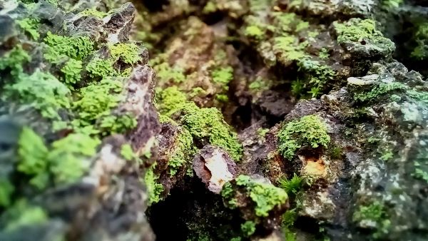

POEMS

To start off my poems, I'll start with... who knows what. All I know, is it was in my notes, and I wrote it before any of the others!
The Holy Ghost 
A voice is quiet amongst chaos no matter it’s volume. A truth is lost in a world of deceit no matter it’s value. But if close to your ear it can be heard, if close to your heart You will be stirred.
My senior year was right after things opened up for Covid. Naturally, there was quite the buzz around the school when they announced they would hold prom, the first dance in over a year. Some of the most excited was a group of girls I knew from choir. They were known to go gossip in there own little circle during every lunch, and were quite rude to anyone they decided they disliked. Many of the girls seemed to have a new boyfriend every two weeks. Every time, it would end in some horrific fasion, and the news of how awful the boy was, always exagurated, would spread throughout the school. Well, none of them got asked to prom. They could not understand why, and they spent every lunch complaining. Every time I spoke to them they would beg for me to find them a date. I knew some people who hadn't asked anyone, but I never told them that. I couldn't do that to a friend. This poem was written after one of their rants:
The Senior Prom

Those girls in the circle, they giggle they goggle they gag,
They talk bad about all the dumb boyfriends they’ve had.
They tear them to shreds, they only see the worst,
They gossip and gossip, they curse and they curse.
Then prom rolls around and they show that they’re angry,
Cause where are the men to call them their lady?
They’ve gone for the sweet girls, the ones they call friends,
For men have brains too and can see the girls’ trends.
Remember that time period when people were kneeling during the national anthem, and many in the united states were talking about how horrible the nation was? Well, I do. That is when I wrote this poem. It wasn't meant to be offencive, I just was frustrated that people decided to hate the very thing that gave them the right to fight, and to be free, rather then steriotypes, laws, or poloticians. Set all political views asside, I will take no stance, the united states gives us the ability to have say.
From a land of oppression men raised up a flag
The flag stood for freedom and conquered the bad
The people all rallied round the symbol of life,
where success was the motivator over the knife.
The flag flew higher and rose its bearers
Who fought hard to end all oppressions and terrors
But the people forgot what had given them rights
They raised their own colors that they built upon lies
They burned the old ensign, they forgot what was
And oppression came new as the flag became dust
The following were poems I wrote as challenges. I would ask a friend, "What should I write a poem on?" and what they said went.
Kool-Aid
Red or purple, and sweeter than candy
It colors my lips no matter my handy
The flavor burns as a cheap Walmart wine
Drop in a hard egg and dye in the brine
Though the pigments vary the flavor's the same
Just sugar, acid, and artificial stain
24 cents to waste away my life
Stirring the powder with a butter knife
I buy it the same for I cannot resist
The taste of sweet water mixed with citrus
Hamburger or cheeseburger?
What is a hamburger when you can have cheese?
Does it have lettuce, tomato’s, pickles at least?
Is it delicious with it’s savory and sweet?
Or is it made of dry bread and tough meat?
The range is too great! Or are they the same?
When it comes to range is cheeseburger to blame?
It costs more, it has more, everywhere its been changed
To fit the style of the restaurants name.
So Don’t be fooled that hamburgers are good,
Cause they aren’t.
Ketchup
When I was young I tried a sauce,
Whether orange or choral they said it was boss.
So… I tried it, I loved it, but it’s true that I saw,
That you could only buy fry sauce in the place called Utah.
There’s one that is yellow, a disgusting hue,
But it’s good on sandwiches if you know what to do,
It’s common enough, but too much is too much,
You can’t moisten with mustard if you use just a touch.
But the white sauce! It moistens which pleases the pallet,
But if you taste the stuff its cause you drank the whole packet
Its just eggs and oil, it doesn’t have any flavor,
Yes, mayonnaise just hasn’t got any savor.
But the brown stuff, it does, it’s smoky and sweet,
You can put it on anything that you call meat.
But it’s a bit overbearing, it calls all attention,
That’s why I put barbeque sauce alone in detention.
It’s white with flecks, it only builds up!
Just a little more flavor for one small cup,
That is if with salad or mixed with Ragu
Ranch is just too fancy for every food.
What condiment fills my every need?
Not buffalo, not A1, or sesame seed.
I know just the one that plays the right part,
Its Ketchup that will always win my heart.
This next poem was inspired by Light Cleaveth Unto Light by Elder Timothy J. Dyches of the seventy (April 2021 General conference) and hymn 284, If You Could Hie to Kolob.

In the black, cold, dark is nothing,
No power, no energy, no gold.
Glimmer, though dim, pierces and wins
Vision within the hole.
Hide the light, you lose also sight.
Worth’s lost in dictating fear
The mind whipped and harrowed by self sentenced sorrows
Stands blind at the end of a pier
Darkness flees to a tiny spark
For fear of truth’s discover.
Uncover its empty hungry abyss
To color reality’s wonder.
Beyond the night is endless,
Worlds without number bright
Majesty, divinity, joy for eternity
If filled with the light.
This last poem I wrote was the most recent, called Daddy's Girl:

Daddy's Girl
He came to our home a little past six
Drove a black dodge converted to stick
He called her baby, she call him slick
But I cannot control her
The rest of her time was spent on the phone
Texting and calling, he wasn't made known
She keeps from the family not feeling alone
But I cannot control her
Giving up hobbies to play with emotions
It's a dangerous game when it's set in motion
I'd play it safe if I were given the option
But I cannot control her
On the fifth of the month they didn't come back
was three in the morning and the street pitch black
I realized I'd lost her but not to my lack
Because I cannot control her